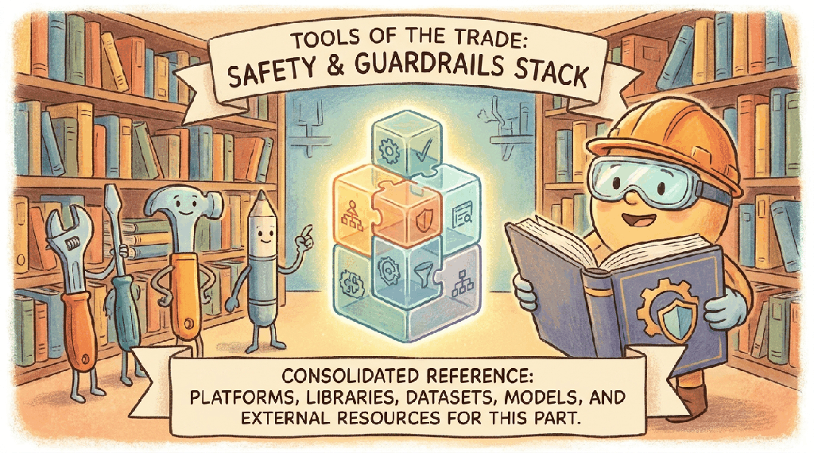

"Guardrails are the part of the system you only thank when they fail loudly."
Author's notebook
Part IX is the safety, security, and ethics part of the book. This chapter's toolbox is the moderation models (Llama Guard, OpenAI Moderation), the guardrail frameworks (NVIDIA NeMo Guardrails, Guardrails AI), the red-team toolkits (Garak, PyRIT), and the privacy libraries (Opacus, TF Privacy).
To add input-output safety filtering to any LLM call in 30 seconds:
pip install guardrails-aiGuardrails AI wraps validators around any LLM client. For self-hosted moderation, run Llama Guard 3 behind vLLM. For red-teaming, Garak is the most-used scanner.
Sections in This Chapter
- 51.1 Platforms A chapter from the Building Conversational AI textbook.
- 51.2 Libraries & Frameworks A chapter from the Building Conversational AI textbook.
- 51.3 Datasets & Benchmarks A chapter from the Building Conversational AI textbook.
- 51.4 Models A chapter from the Building Conversational AI textbook.
- 51.5 External Reading & Communities A chapter from the Building Conversational AI textbook.
What Comes Next
Part X turns to the product side: idea to ship, with AI coding tools, project tooling, and analytics. Chapter 71 closes Part X with the product-builder toolbox.